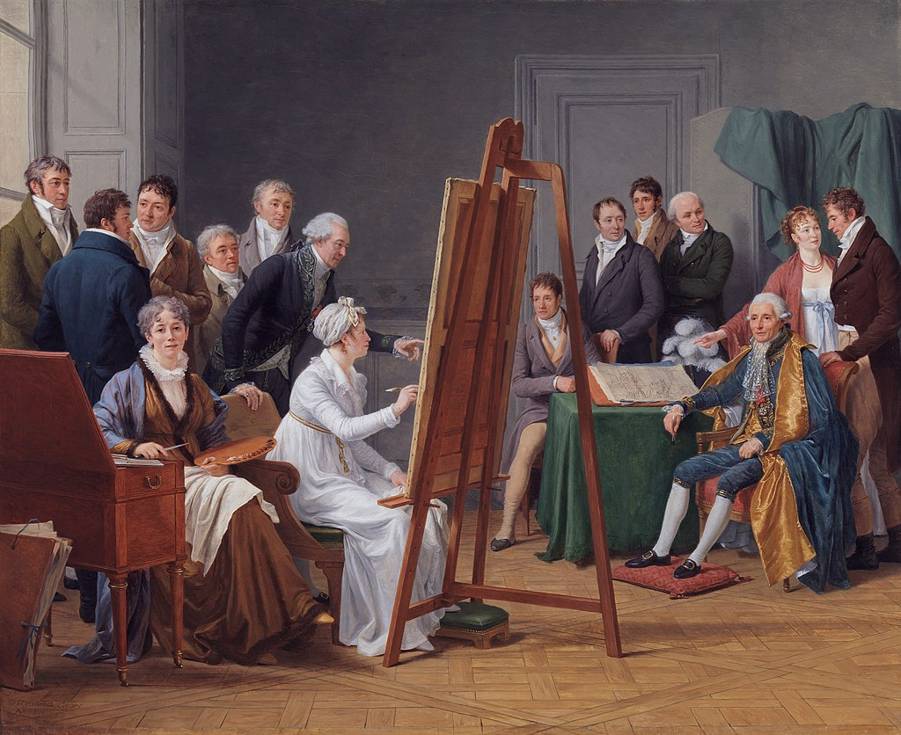

Капе, Мари-Габриэль
Мари-Габриэль Капе́ ( фр. Marie-Gabrielle Capet; 6 сентября 1761 , Лион — 1 ноября 1818 , Париж) — французская художница, ученица Аделаиды Лабиль-Гийяр . Известна в первую очередь как портретистка, работавшая в жанре миниатюры .
Биография и творчество
Мари-Габриэль Капе родилась 6 сентября 1761 года в Лионе. Семья была небогатой; в её свидетельстве о рождении записано, что отец — домашний слуга. Неизвестно, каким образом ей удалось попасть в столицу и начать обучение живописи. Возможно, она каким-то образом проявила способности к искусству, и нашёлся меценат, готовый оплатить её обучение[4].
В Париже Мари-Габриэль поступила в обучение к известной художнице того времени Аделаиде Лабий-Гийяр. С 1782 года и до самой смерти Лабий-Гийяр в 1803 году Мари-Габриэль Капе жила у неё и заботилась о ней во время её тяжёлой предсмертной болезни[4]. Лабий-Гийяр, в свою очередь, написала портрет подруги и изобразила её на своём знаменитом автопортрете 1785 года. Капе на всю жизнь сохранила преданность учительнице, несмотря на то, что, даже сумев создать собственную карьеру, всё же оставалась в её тени[4][5].

В начале своего творческого пути Капе писала портреты пастелью, акварелью и маслом, но затем стала специализироваться на портретной миниатюре: возможно, для того, чтобы обрести самобытность и избежать соперничества с Лабий-Гийяр[4][6]. Свои работы она впервые выставила в 1781 году на выставке молодых художников (фр. Exposition de la Jeunesse).
Тогда же, в 1781 году, Капе получила заказы на портреты принцесс. Но когда ей сказали, что она может быть принята в Королевскую Академию, если найдёт спонсора, Капе отказалась, заявив, что сами её работы должны в достаточной степени говорить за неё. Однако позднее она всё же стала членом Академии, написав в качестве обязательной работы пастельный портрет скульптора Огюстена Пажу[5][4].
Когда, с 1791 года, официальный Салон стал доступен для женщин (во многом благодаря усилиям Лабий-Гийяр), Капе была в числе первых женщин, выставивших там свои работы. Она продолжала регулярно выставляться в Салоне вплоть до 1814 года[4].
Мари-Габриэль Капе умерла 1 ноября 1818 года в Париже. Она похоронена на кладбище Пер-Лашез.
В общей сложности Капе создала около 150 работ, но поскольку в большинстве своём это были миниатюры, они не привлекали широкого внимания (жанр вообще ценился невысоко), и после смерти художница оказалась забытой[7][4]. В настоящее время её работы находятся преимущественно в частных коллекциях; часть хранится в музеях Франции[4][8].
Примечания
- 1. Marie Gabrielle Capet (нидерл.)
- 2. Marie Gabrielle Capet (англ.) — OUP, 2006. — ISBN 978-0-19-977378-7
- 3. artist list of the National Museum of Sweden — 2016.
- 4. Women Artists: 1550—1950, 1976, p. 195.
- 5. Lesser-known women, 1992, p. 37.
- 6. Bryan's Dictionary, 1886, p. 228.
- 7. Lesser-known women, 1992, p. 37—38.
- 8. Capet Gabrielle (фр.). Joconde. Portail des collections des musées de France. Дата обращения: 11 марта 2020. Архивировано 29 марта 2020 года.
Литература